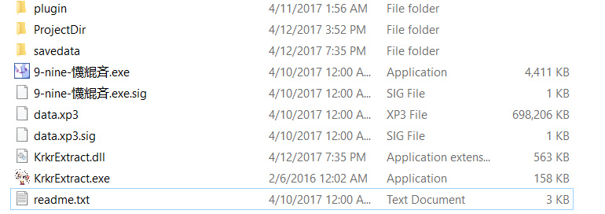
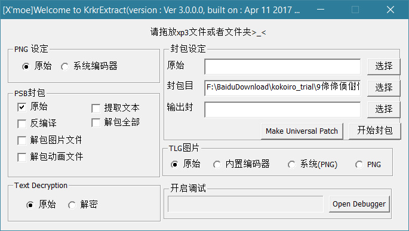
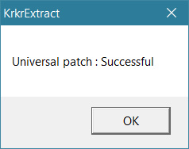
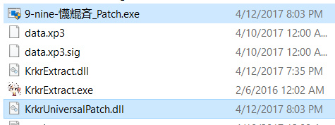
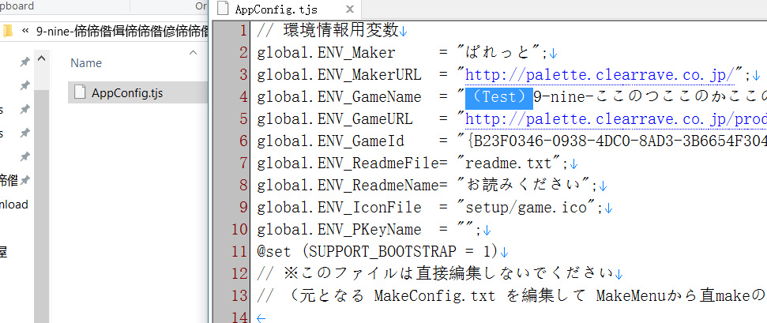
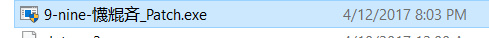
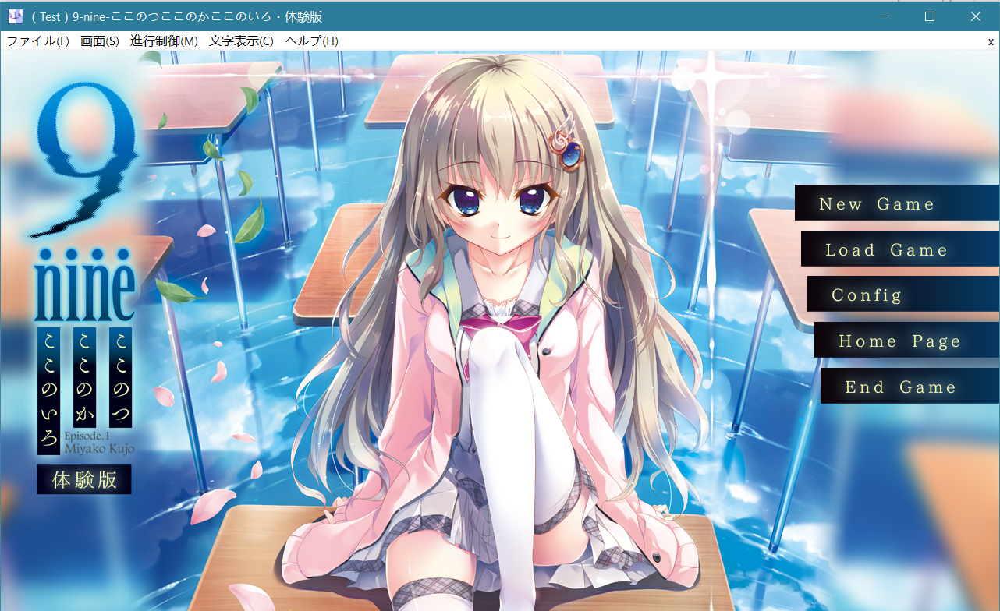

别的废话我就懒得说了。
1.修复了2.0.x版本由于版本时带来的稳定性问题
2.通用Krkr补丁技术（我很懒，说是通用，但现在实际上只支持Krkrz引擎
3.移除了对Windows XP的支持（都7102年了，还XP？？）
为啥不支持Krkr2呢，并不是引擎上有改版问题，要怪就怪傻逼的bcb编译器吧，把代码编译成了一拖shit。以后看心情再说添加支持的问题吧。
本次的重点在第二条，于是我就随手找个游戏来做说明吧。

（求别吐槽乱码）
使用KrkrExtract打开游戏后，我们可以看到：

在封包设定下面有一个Make Universal Patch的按键。没错，如果你当前启动的游戏是基于Krkrz，你只需要轻轻一点，就会出现一个补丁成功的提示窗口：

现在，我们游戏目录下出现了两个新文件：

我说明一下，xxx_Patch.exe就是补丁启动文件，而KrkrUniversalPatch.dll就是补丁文件。因为当前还是没封包的状态（等下我解释如何制作自定义封包），补丁默认读取当前目录的ProjectDir文件夹。
那行吧，我把AppConfig.tjs的中的标题名改一改：

再运行补丁文件：

好了，刚才的AppConfig.tjs已经成功被读取:

记住，在当前版本中，请勿在ProjectDir文件夹中建立子文件夹，反正子文件夹里的文件是无法读取的。
还有一点就是，有的汉化组会改动视频文件，我的建议是在Initialization.tjs 或者 Override.tjs中添加一个文件夹寻址，比如movie_chs，视频文件请勿封包（放进ProjectDir里）。
下一个版本会加入scn脚本（也包括PIMG图片，emote文件）JIT编译技术（实际上有的汉化组已经用上我写的这个功能了），可以随便修改文件而不用封包为二进制脚本。
好，接下来就是如何自定义封包的问题了。
我直接先放一段老少咸宜的代码吧：（具体的一些细节我不会讲的）
#include <Windows.h>
PVOID NTAPI AllocateMemoryRoutine(ULONG_PTR Size);
VOID NTAPI FreeMemoryRoutine(PVOID Mem);
decltype(&AllocateMemoryRoutine) XmoeAllocateMemory = NULL;
decltype(&FreeMemoryRoutine) XmoeFreeMemory = NULL;
#pragma comment(linker, "/EXPORT:XmoeInitFileSystem=_XmoeInitFileSystem@8,PRIVATE")
extern "C" __declspec(dllexport)
NTSTATUS NTAPI XmoeInitFileSystem(decltype(&AllocateMemoryRoutine) AllocateRoutine, decltype(&FreeMemoryRoutine) FreeRoutine)
{
if (!AllocateRoutine || !FreeRoutine)
return STATUS_INVALID_PARAMETER;
//注册来自Host的内存分配器，这里分配内存和释放内存都必须用这两个
XmoeAllocateMemory = AllocateRoutine;
XmoeFreeMemory = FreeRoutine;
return 0;
}
//读取文件，怎么用一目了然。读不懂，我也没办法。
#pragma comment(linker, "/EXPORT:XmoeQueryFile=_XmoeQueryFile@12,PRIVATE")
extern "C" __declspec(dllexport)
NTSTATUS NTAPI XmoeQueryFile(LPCWSTR FileName, PBYTE* FileBuffer, ULONG* FileSize)
{
if (!FileName || !FileBuffer || !FileSize)
return STATUS_INVALID_PARAMETER;
*FileSize = 0;
*FileBuffer = nullptr;
return 0;
}
BOOL NTAPI DllMain(HMODULE hModule, DWORD Reason, LPVOID lpReserved)
{
return TRUE;
}
唯一需要注意的是，在XmoeQueryFile这个导出函数中，需要谨慎处理文件名。
比如对于同一个文件AppConfig.tjs，传入的文件名可能是”AppConfig.tjs“也可能是”appconfig.tjs“，总之就是大小写的问题。